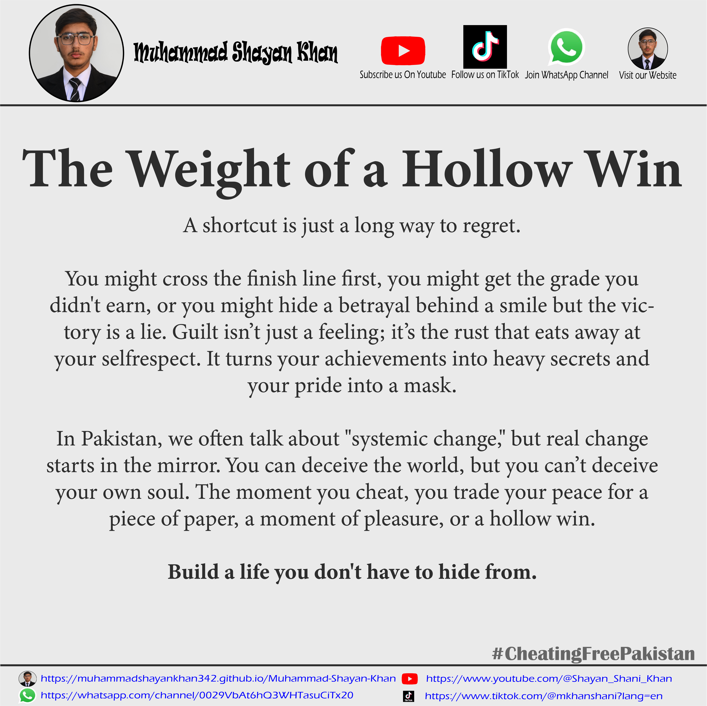
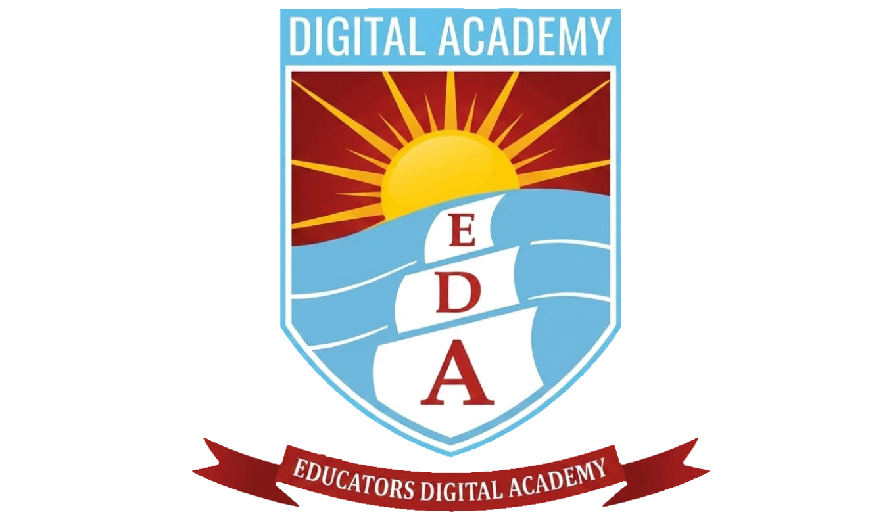

Monthly Post

🚀 Founder of MuhammadShayanKhan.co
"I am Muhammad Shayan Khan, a passionate student dedicated to helping others achieve academic success. Having scored 1026 marks in Matric and appeared in board examinations Four times, I have gained valuable insights that I now share with students. Through my content, I provide past papers, mock exams, study strategies, and motivational guidance to help you prepare better. My mission is to make learning easier, more effective, and accessible for every student."



